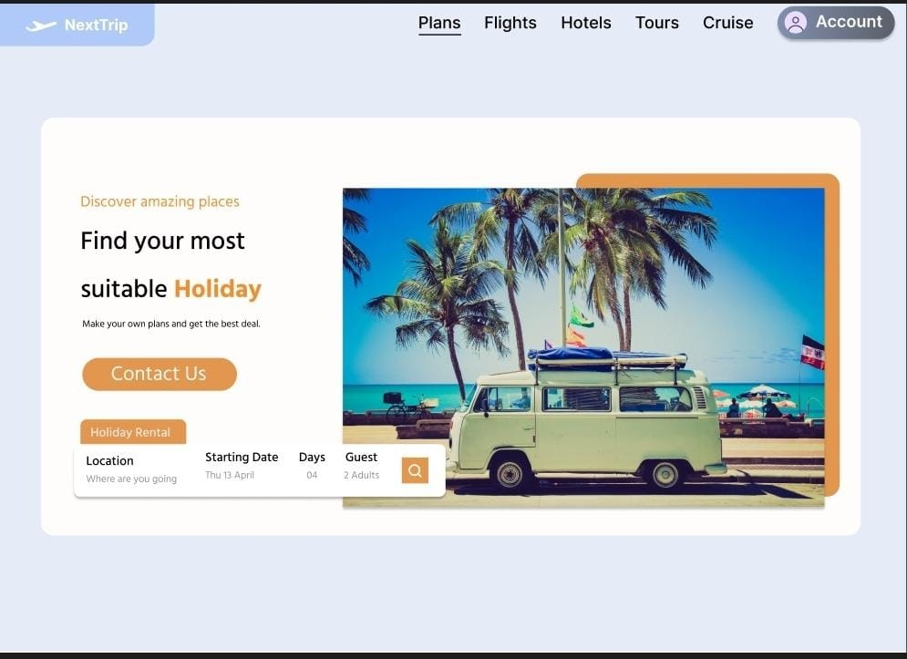
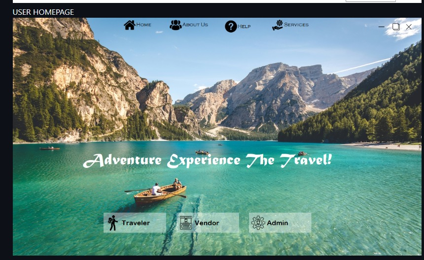
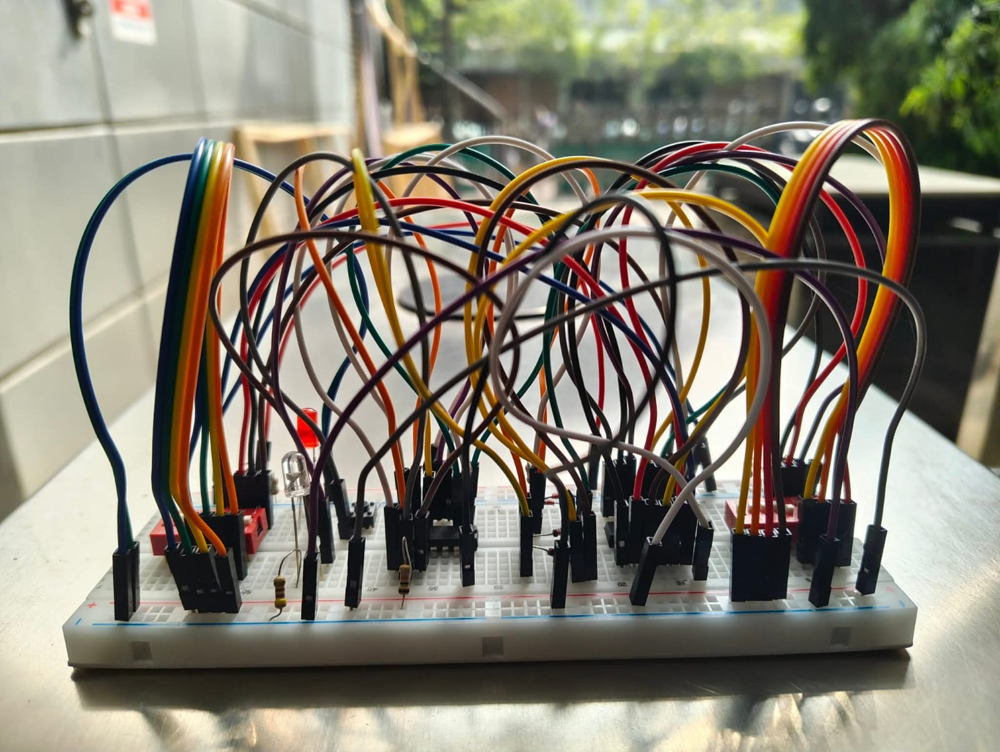

|
 |
NextTrip
for UI/UX design, Trello for task management, and Notion for documentation and team collaboration. This project helped me understand the software development workflow, improve teamwork and planning skills, and gain practical experience in building structured solutions. |
|
 |
Tourism Management
related information and operations efficiently. The system was designed to handle features such as user management, tour packages, bookings, and basic data handling. This project helped me strengthen my understanding of object oriented programming concepts, logical problem-solving and building structured desktop applications using C#. |
|
 |
555 Timer Bell Management
time-based signals for controlling an electronic bell. The circuit was configured in astable/monostable mode to produce accurate triggering and sound intervals.Through this project, I gained practical experience in electronic circuit design, component selection, and timing control. It also strengthened my understanding of digital logic concepts and real-world hardware implementation. |